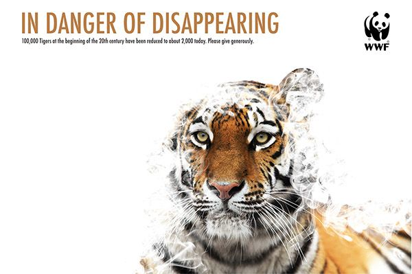

HELP SAVE OUR MALAYAN TIGERS
Tigers are key to healthy forests, which we need for clean air, fresh water, climate change mitigation, and more. Help save tigers and safeguard our future.

HELP SAVE OUR MALAYAN TIGERS
Tigers are key to healthy forests, which we need for clean air, fresh water, climate change mitigation, and more. Help save tigers and safeguard our future.
TOP NEWS
Joint Media Release - STB and WWF-Malaysia Forge Partnership for a Sustainable Sarawak in Rajang-Belawai-Paloh
Media Release: No Plastic in Nature Symposium to tackle plastic pollution in Sabah
Feature Article: Securing Sustainable Fisheries Solution
Letter to Editor: Saving the Malayan Tiger - Roadkill Must Stop
Southeast Asia Rises to Climate Challenges: Uniting Nature, Technology, and Collaboration at COP29

Double Victory for WWF-Malaysia at SGHA 2024
In all things of nature, there is something of the marvelous.
-- Aristotle
HELP PROTECT PEOPLE AND OUR PLANET
Everyone, animals and humans alike, need healthy forests, rivers and seas to survive. By protecting Malaysia’s natural ecosystems and conserving our priceless biodiversity, WWF- Malaysia is helping to protect our livelihoods, food security and freshwater supply, thus securing our good quality of life and our children’s future.